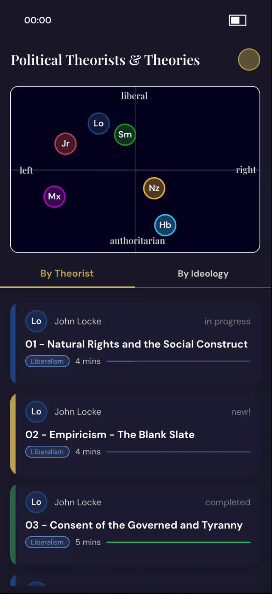
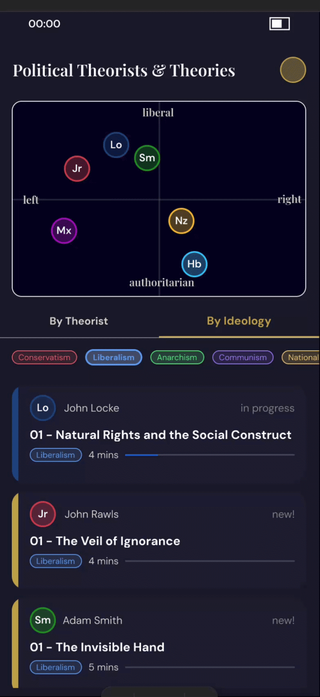
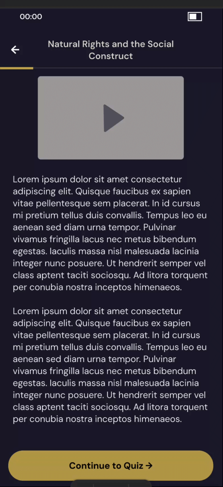
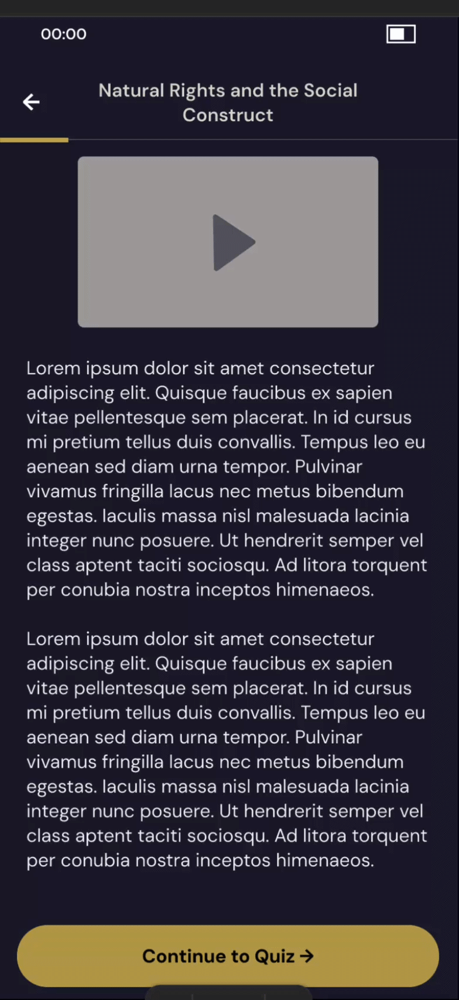
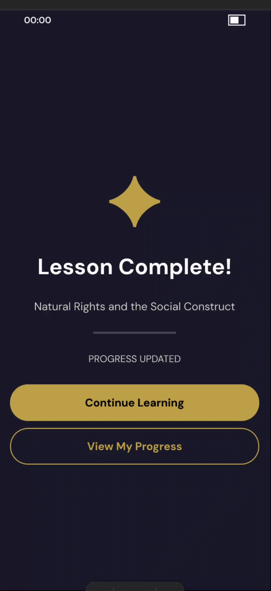

A mobile micro-learning app that maps political thinkers on an ideological compass and guides users through five-minute lessons, quizzes, and a progress tracker.
Political theory is a domain where ideas are usually taught in isolation without the relationships between them made visible. This app's central challenge was making ideological position spatial and intuitive. The political quadrant is pedagogically purposeful, letting learners understand where a thinker sits before reading about what they think.
Users begin by browsing theorists on a political quadrant, tap into a lesson card to preview a thinker, scroll through lesson content, answer a three-question quiz, receive feedback on each answer, then land on a progress tracker that shows completion per theorist and ideology.
Each demo below captures a distinct interaction from the Figma prototype. The full prototype is linked at the bottom of this page.

The home screen offers two views of the lesson library. The By Theorist tab shows all lesson cards grouped by thinker. The By Ideology tab surfaces a horizontally scrollable filter strip, tapping a chip (Liberalism, Communism, Conservatism, Anarchism) filters the card list to lessons in that ideology.
The tab switch uses a Dissolve transition between two duplicate home screens: the only way to change content layout in Figma without conditional visibility. The gold underline moves with the active tab.
Tapping a lesson card (here: John Locke — Natural Rights and the Social Construct) opens the Lesson Detail screen, showing the theorist portrait, ideology tags, lesson progress, and a pinned Start Lesson button.
The Lesson Content screen is scrollable — a reading progress bar tracks position. Lesson content includes a video placeholder, body text, and a Continue to Quiz button that the user must scroll to reach, making reading feel intentional.


When a user selects a wrong answer, the option highlights in red on tap. After submitting, the Feedback — Incorrect screen appears with a red ✗ icon, the correct answer revealed, and an explanation of why in a red-tinted callout box.
Two buttons appear: Try Again (secondary, outlined) to return to the quiz, and Next Question (primary, gold) to continue. The incorrect state is a separate feedback screen, built by duplicating the Correct screen and changing four things.
A correct answer triggers the Feedback — Correct screen with a green ✓ icon and a gold-bordered explanation box. After the final question, the user lands on the Lesson Complete screen.
The completion screen centres a gold ✦ star, the lesson title, and two actions: Continue Learning (returns to home) and View My Progress (navigates to the tracker). The entire layout uses a full-screen Vertical Auto Layout frame with centre alignment on both axes.


After completing a lesson, users can tap View My Progress to reach the Progress Tracker. Two donut ring charts show overall completion percentages: one for Theorists, one for Ideologies.
Below the rings, a list of theorist rows shows each thinker's portrait, name, progress bar, and percentage. Completed theorists display a green ✓ badge overlapping their avatar. The list uses nested Auto Layout: each row is Horizontal AL, and the Name + Bar sub-group is Vertical AL inside.
All 9 screens linked in the Figma prototype: from the political quadrant home screen through lesson content, quiz, feedback, and the progress tracker. Start on the Home screen and tap through the full happy path.